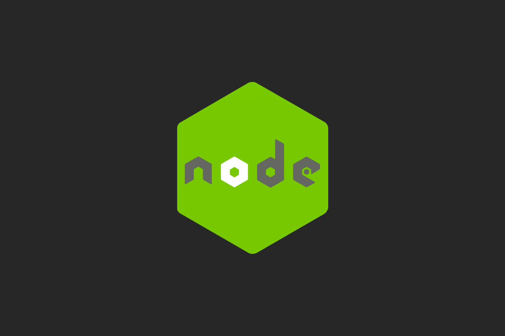

#NODE JS|
September 3th, 2020

There is a huge number of technologies that's used to build web servers and REST APIs to power and manage websites and web applications on the backend. In this article we will take a look at one of these modern technologies called Node JS and we will see what is Node JS and how it works.
1 - what is node JS ?
Node JS is a JavaScript runtime environement that executes JavaScript on the web server or even directly on a computer, which means that we can use JavaScript as a server-side language just like other programming language like PHP, Python or Java. In order to understand how Node JS Works, let's first understand how computer works and how they understand code.
Computers can only understand machine code ( also known as binary code ), but this code is really complex to write and read for us as human. so something called assembly language is built on top of this machine code, which is a litle bit easier to read and write, but this assembly language is still complex to read and write, that's why we have programmig languages like c++ built on top of this assembly language.
So, now we can write C++ code on computer which is a much esier than assembly code, so the computer will understand it because it's compiled down to machine code.
JavaScript is a progrmming language which abstracted even more away from machine code than C++ to make programming easier. But computer can not directly understand JavaScript or compiles it down to machine code, so we can not directly run JavaScript on a computer, but it can run inside a web browser such as Google Chrome, Firefox or Safari, but how does That work ?
Inside each web browser there is a JavaScript engine That is written in C++ for example Google Chrome has V8 engine and Firefox has Spider Monkey. This JavaScript engine compiles JavaScript code into machine code at a runtime, so by passing JavaScript code through this this V8 engine in the browser the computer can then understand JavaScript, however it can not run JavaScript outside the browser, because there no V8 engine compiles it down to machine code outside the browser. And here is where Node JS come into play.
Node JS is a software ( program ) also written into C++ and wraps the V8 engine, which means that the V8 engine lives inside the web browser also lives inside Node JS. Because Node JS is written in C++ it can run directly in our computer, which means by installing and runnig Node JS on our computer,it can take our JavaScript code and run it through the V8 engine that it has inside it and compiles it into machine that computer can understand.
So now, using Node JS we can run JavaScript code directly on a computer or a server, but this is not just the only thing that Node JS can do. Node JS has other additional features such as read and write files on a computer using fs module ( Node Core Module ), connect to a database using Moongose ( 3rd Party Package ), act as a server for a content using http module ( Node Core Module ) or Express ( 3rd Party Package ). Basically with Node JS you can do anything that other programming languages can do.
2 - what does Node JS do on a website ?
The role of Node JS on a website or web application is basically to run JavaScript code on the backend. this JavaScript code might be handling requests that comes from the web browser, communicate with files on the server, intaracting with a database or sending responses back to the web browser. A server response could be an HTML page with dynamic data embedded inside it, maybe some CSS files or images.
3 - why use node JS and not other technologies ?
Node JS is extremly fast, efficient and highly scalable, that's why is a good choice if you want to build the backend of a website or web application, it also has a feature of non-blocking code, and the most important is that Node JS give the ability to use the same language ( JavaScript ) that is used to build the frontend, so you can use only one programming language to build a full stack website or web application.
Another reason of choosing Node JS is that it has a massive community behind it, there is always help if you need it or you are stuck on a problem. And there is also a huge amount of 3rd party packages that allow you to add functionalities to your web application without having to reinvent the wheel.
3 - what should you know first ?
JavaScript Building Blocks :
Data Types
Variables
Arrays
Objects
Conditionals
Loops
Functions
ES6 :
JSON :
HTTP Methods :
GET
POST
PUT
DELETE
4 - Node JS Core Modules
Node JS has a large set of core modules that it comes with and the most used modules are fs, path, http and os.
5 - Node Package Manager (NPM)
When you intall Node JS you get something called NPM stands for Node Package Manager, this tool is used to install 3rd Party Packages or modules such as frameworks or libraries. These packages get stored in a folder that will be created automatically called node_modules, so any package that you install will get listed in a file called package.json which every Node JS project should include, this file holds information about your application like the name, the version and also a list of all dependencies that your application needs to run.
6 - Node Custom Modules
In Node JS you can also create your own modules which are simply files that have an export, this way you can export variables, functions, classes or anything else from one file and have access to them in another file using the require keyword.